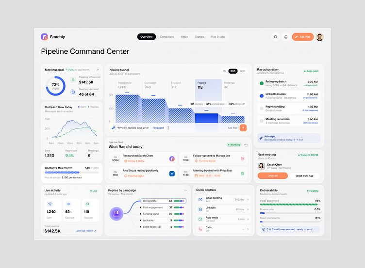

AI Sales Agent Dashboard UXUI Design
by Azmir Sheikh
AI · dashboardAI · Dashboard
AI 销售助手仪表盘 Reachly 的 Pipeline Command Center：顶部漏斗把 1,280 条线索从联系、互动一路收到 118 次回复、46 场会议，左侧 Meetings goal 72%、$142.5K 配 46 of 64，右侧 Rae automation 把跟进、LinkedIn 邀约、回复处理排成一张时间表；销售漏斗用“数字漏斗 + AI 今日待办”让管理者一眼看到钱在哪一步。Reachly's AI sales agent dashboard, the Pipeline Command Center: one funnel runs 1,280 researched leads down to 940 contacted, 312 engaged, 118 replies and 46 meetings, with a 72% meetings goal ($142.5K, 46 of 64) on the left and Rae's automation queue — follow-ups, LinkedIn invites, reply handling — timetabled on the right; a sales funnel reads as numbers plus what the AI does today, so a manager sees exactly where the money sits.